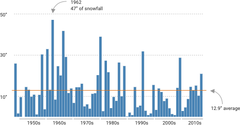

Change Over Time
Richmond weather shows a positive trend for both high and low temperatures. Over the 71 years, the high temperature has increased by +1.41• and the low temperatures have increased by +2.90•.
Precipitation
The wetest year on record is 2018 with percipitation total of 63.73 inches. Did you know? According to WGN9, "The annual precipitation total is arrived by summing the daily amounts of the water equivalent of all precipitation that has fallen. When precipitation falls as rain the amount is read directly from the official rain gauge and recorded in hundredths of an inch. The smallest amount of measurable precipitation is 0.01 inch with lesser amounts recorded as a trace. When the precipitation falls as snow, the snow is collected in the rain gauge, melted and measured as if it fell as rain. Typically an inch of snow yields about 0.10 inches of liquid equivalent, but that can vary depending upon the temperature during the snowfall."
Snow
Richmond sees an average of 12.9 inches of snowfall per year. The snowiest winters on record was 1962 with 47" of snowfall. The two snowiest days on record are January 5, 1980 and February 11, 1983, each with 13.3 inches of snowfall in one day. Only one year, 1951, saw no measurable snowfall.

1948 - First Year of Data
Data for this visualization came from NOAA database. The weather was recorded at the Richmond Weather Station in Richmond, VA. Record keeping began in 1946, however 1948 was the first year of clean, consistent data for the max/min temperatures and precipitation.
Year with Biggest Variation
Which year had the biggest swing in temperatures? Two years had 106• difference between their highest high and lowest low. Those were as follows:
1977 (pictured right)
January 17, 1977,
Lowest Temp: -1•
July 6, 1977,
Highest Temp: 105•
Difference: 106•
1985
January 21, 1985,
Lowest Temp: -6•
August 14, 1985,
Highest Temp: 100•
Difference: 106•
Year with Smallest Variation
Opposite of the above, there were three years that tied for the smallest variation in temperature. These are the three years with the smallest difference in the highest high and lowest low:
1992
January 19-20, 1992,
Lowest Temp: 16•
August 14, 1992,
Highest Temp: 98•
Difference: 82•
2004
January 11, 2004,
Lowest Temp: 11•
June 18, Junly 5 & 8, 2004,
Highest Temp: 93•
Difference: 82•
2013 (pictured right)
January 23, 2013,
Lowest Temp: 14•
June 25, July 16-17, 2013,
Highest Temp: 96•
Difference: 82•
Hottest Summer
Mildest Summer

Inverse of the above, the mildest summer is the lowest value of the average high temperatures by year for "summer". Summer is defined as June 21 - September 23. 2000 was the mildest summer on record. Here are the 3 mildest summers for Richmond, VA:
1. 2000: 82.69 Avg High
2. 1964: 83.06 Avg High
3. 1972: 83.36 Avg High
Coldest Winter
The coldest winter is the lowest value of the average low temperatures by year for "winter". Winter is defined as December 21 (previous year) - March 19. Under this criteria, 1970 was the coldest winter on record. Here are the three coldest winters in Richmond, VA:
1. 1970: 23.85 Avg Low
2. 1978: 24.03 Avg Low
3. 1977: 24.87 Avg Low
Mildest Winter
Opposite from above, the mildest winter is the highest value of the average low temperatures by year for "winter". Winter is defined as December 21 (previous year) - March 19. Under this criteria, 2012 was the mildest winter on record. Here are the three mildest winters in Richmond, VA:
1. 2012: 35.51 Avg Low
2. 1990: 35.33 Avg Low
3. 1998: 34.72 Avg Low